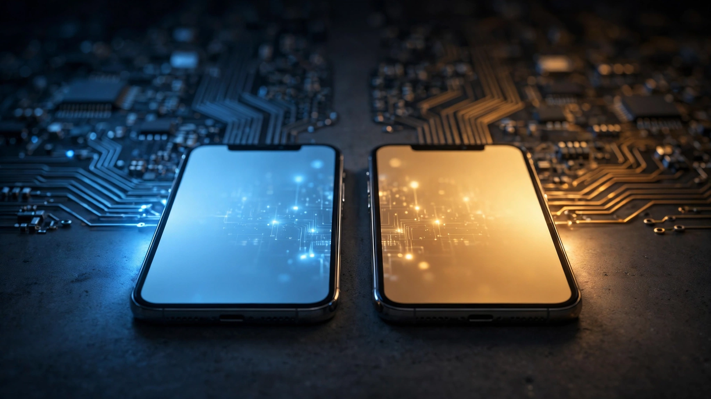

Apple Intelligence in China Runs Alibaba’s AI, Not OpenAI’s. 230 Million Users. The Benchmarks Say the Gap Is Closing.
China’s Cyberspace Administration just approved Apple Intelligence for Chinese iPhones, but powered by Alibaba’s Qwen and Baidu instead of OpenAI’s ChatGPT. About 18% of the global iPhone installed base will now run a fundamentally different AI stack. Cross-referencing public benchmarks reveals a counterintuitive result: on two key metrics, Qwen scores higher than GPT-4o.

Roughly 230 million active iPhones sit in Chinese consumers’ pockets and purses, according to cumulative shipment data from IDC and device retention models. On Wednesday, every one of those devices moved closer to getting Apple Intelligence — but not the version running on the other 1.07 billion iPhones worldwide. China’s Cyberspace Administration (CAC) formally registered Apple Intelligence for domestic use, clearing the last regulatory gate after a nearly two-year delay since the global launch in October 2024. Instead of OpenAI’s ChatGPT handling complex queries, Chinese iPhones will run Alibaba’s Qwen for language tasks and Baidu for visual understanding.
This is not a localization tweak. It is the first time a trillion-dollar company will ship identical hardware to two markets and run fundamentally different AI inference engines on it based purely on geography. Google does not offer Gemini in China; Microsoft’s Copilot does not operate there; Meta’s AI assistant is blocked entirely. Apple alone is attempting a split that preserves one product surface while running two separate brains underneath. That divergence touches roughly 18% of the global iPhone installed base, creating what may be the largest consumer-product AI bifurcation ever attempted. Same phone, same logo, different brain.
Two Stacks, One Interface
Outside China, Apple Intelligence works as a layered system where simpler tasks run on Apple’s own on-device models trained on proprietary data with privacy guarantees enforced by Nvidia’s confidential compute infrastructure, complex queries escalate to OpenAI’s ChatGPT under a bespoke licensing agreement, and users can also opt into Claude or Gemini for certain tasks. Inside China, that entire architecture collapses into a single regulatory reality: all generative AI services must pass security reviews, register algorithms with the CAC, and process user data exclusively on domestic servers, which means foreign models like ChatGPT cannot be offered directly to consumers.
Apple spent nearly two years co-developing a compliant version with Alibaba and Baidu. Chairman Joe Tsai confirmed the partnership publicly: “They talked to a number of companies in China. In the end they chose to do business with us.” Qwen handles the general language model layer while Baidu provides visual intelligence features, and together they replace the OpenAI+Apple stack powering every other iPhone on Earth.
A Benchmark Surprise
Most observers assume Chinese users will receive second-rate AI to accompany their first-rate hardware, but cross-referencing publicly available benchmark data paints a considerably more nuanced picture than that assumption would suggest.
| Metric | Qwen 3.5 (Alibaba) | GPT-4o (OpenAI) | Edge |
|---|---|---|---|
| MMMU (multimodal understanding) | 82.0% | 79.5% | Qwen |
| HumanEval (code generation) | 92.6% | 89.2% | Qwen |
| Data visualization quality | 163/200 | 178/200 (GPT-5.2) | GPT |
| API pricing (input/M tokens) | $0.20 | $2.50 | Qwen |
| Context window | 256K tokens | 128K tokens | Qwen |
Sources: Codersera (Qwen3.5 Omni benchmarks), TechSilk/Medium (comparative analysis), LMMarketCap. Note that the data visualization comparison uses GPT-5.2, a model generation newer than GPT-4o, which makes Qwen’s 91.6% relative score all the more notable given the handicap. All benchmark figures come from third-party evaluations rather than vendor marketing claims.
Three caveats complicate those numbers. Apple will almost certainly run optimized, smaller versions of Qwen on-device rather than the full 397-billion-parameter cloud model, so real-world on-device performance will fall below what the table shows. Baidu’s Visual Intelligence capabilities have not been publicly benchmarked in a way that permits direct comparison with Apple’s OpenAI-powered image understanding in other markets. And raw benchmark scores cannot capture the effect of content filtering required by Chinese regulations — filtering that will prevent Apple Intelligence from answering categories of questions the global version handles freely, meaning the models may score comparably on standardized tests while diverging sharply on politically sensitive or culturally restricted topics in ways no benchmark measures.
$66.7 Billion at Stake
Apple’s Greater China segment generated $66.7 billion in FY2025 revenue, roughly 21% of a $394 billion total, and Q2 2026 iPhone shipments in China grew 24.4% year-over-year to approximately 12.4 million units according to IDC, making Apple the second-largest smartphone vendor behind Huawei at 22.6% market share. Analysts had cited the absence of Apple Intelligence as a competitive drag against Huawei, Xiaomi, and Oppo, all of which already shipped domestic AI features on their devices, so Wednesday’s regulatory approval addresses a vulnerability threatening roughly one-fifth of Apple’s annual revenue.
Serving China means running Alibaba’s AI, and that means Apple Intelligence is no longer one product but two wearing the same name, maintained by separate engineering relationships against two regulatory frameworks with independent model upgrade cadences and content-moderation standards. For a company whose brand rests on the seamlessness of a single globally consistent experience, this architectural split represents a concession whose downstream costs are difficult to estimate but impossible to avoid.
Developer Implications
Any app calling Apple Intelligence APIs now faces a regional branching problem that Apple has not addressed in its public documentation. A writing assistant built on Apple Intelligence will produce different outputs in Beijing than in Boston. Not because of anything the developer configured, but because a different model sits underneath the same API surface. Summarization quality, coding assistance accuracy, and image understanding will all vary by geography in ways the developer cannot predict without region-specific testing. Consider a Shortcuts automation that summarizes emails: the same prompt fed to Qwen and ChatGPT will return different lengths, different emphasis, different omissions, and the developer has no toggle to control which model runs.
For developers weighing whether to build on Apple Intelligence, the practical question becomes whether they can treat it as a single abstraction layer or whether they must validate separately for China, essentially doubling quality-assurance budgets for a feature Apple markets as a unified platform capability. If the answer is the latter (and the architectural evidence strongly suggests it will be), Apple Intelligence functions less as a platform primitive and more as a platform-shaped container for two distinct services sharing an API signature.
Precedent and Proliferation
Europe’s AI Act GPAI provisions took effect in August 2025 with provisions for high-risk AI systems that could compel similar regional model adaptations; India’s Digital India Act includes AI governance requirements; Brazil’s AI regulation bill advanced through committee in 2026. Once Apple demonstrates willingness to run region-specific AI models for regulatory compliance, every country with pending AI legislation gains a template for demanding the same treatment, and the question shifts from whether bifurcation will spread to how rapidly it proliferates across jurisdictions insisting on their own data-sovereignty guarantees.
Today there are two stacks, but whether that number holds or climbs toward five, ten, or a model-per-market architecture depends on how aggressively regulators outside China push their own requirements and whether Apple treats the Alibaba/Baidu partnership as a one-off concession to the world’s second-largest economy or as a repeatable playbook for Southeast Asia, the Middle East, and eventually the EU.
What We Cannot Prove
We do not know which specific Qwen variant Apple will deploy on-device in China, nor how its performance compares with Apple’s proprietary on-device models used elsewhere, because Apple has disclosed neither architecture details nor on-device benchmark results for either stack. We cannot quantify how many Apple Intelligence features will ship at launch in China versus those available globally, since the CAC registration may cover only a subset and no launch date has been announced. And we have no data on the scope of content filtering Apple and Alibaba have implemented, filtering that could prove narrow enough to be unnoticeable for most users or broad enough to materially degrade utility across a wide range of everyday queries.
Here is the strongest counterargument to the bifurcation framing: none of this is genuinely new, because Google Search returned different results in China before the company pulled out, Facebook’s News Feed applies different content moderation by country, and Netflix licenses different catalogs for every market it enters. What Apple is doing could be characterized as merely another multinational adapting to local regulation rather than a genuinely novel split. But previous adaptations filtered outputs from a single inference engine, while Apple Intelligence in China replaces the entire pipeline from model weights to training data to the API providers behind the abstraction layer. Swapping a content filter is a quantitative adjustment; swapping the brain is a qualitative one, and that distinction matters to every developer, business, and user who assumed “Apple Intelligence” described one product rather than two.
What Comes Next
Apple Intelligence in China is not a downgrade, and benchmark data suggests Alibaba’s Qwen family is competitive with OpenAI on key metrics while running at roughly one-twelfth the per-token cost. But it is unmistakably a different product, with content boundaries, model behavior, and response characteristics that will diverge in ways no standardized test captures. If you build iOS apps that call Apple Intelligence APIs, test your features in both regions before assuming consistent behavior, because consistent behavior is precisely what you will not get. If your company deploys Apple Intelligence for employee-facing tools across offices in Shanghai and San Francisco, expect different outputs from identical prompts and plan compliance workflows accordingly. For investors, watch whether Apple begins disclosing engagement or quality metrics for its China AI stack separately from global numbers, because the day it does, it will be admitting these are two products rather than one. For everyone else, the calculus is simpler but no less consequential: the phone in your pocket now runs different AI depending on which side of a regulatory border you stand on, and neither side receives a worse deal than the other in the ways that matter to benchmarks. Where they diverge is in the questions each AI will decline to answer, a list that has never been published and almost certainly never will be.